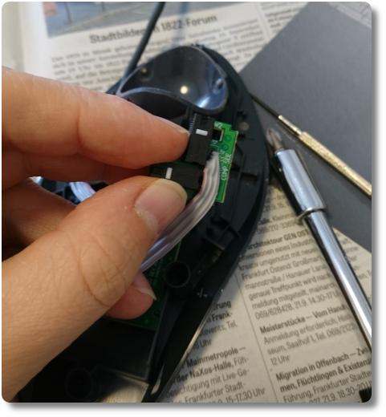

Mausreparatur per Lötkolben
Wir haben seit kurzem einen Lötkolben und diverses Zubehör. Und damit fühle ich mich jetzt wie ein kleiner Reparatur-Gott!!! Denn am vergangenen Wochenende haben wir die Computermaus meiner Frau repariert. Es lebe die Do-It-Yourself Bewegung - wider dem Wegwerfwahn. ^_^
Die Maus, eine Trackball Marble Maus von Logitech, hat rechts und links jeweils zwei Maustasten, von denen jeweils eine nicht mehr richtig funktionierten. Die eingebauten Schalter, siehe Bild oben, gingen langsam kaputt. Das äußerte sich in ungewollten Doppelklicks oder auch gar keiner Reaktion bei Tastendruck. Der Neupreis zwischen 20 und 50 Euro ließen mich erstmal nach ein paar Reparaturanleitungen im Netz suchen und wieder einmal erwies sich Youtube als Schatzgrube.
Hier hatte ein netter Mensch genau dasselbe Problem wie wir und ausf√ºhrlich gezeigt, wie man die Maus √∂ffnet, wie man die Taster von den Leiterplatten entl√∂tet und vertauscht wieder anl√∂tet. Damit war alles so leicht, dass die Maus auch von so unge√ºbten Leuten wie uns repariert werden konnte. Die defekten Taster haben wir jetzt also mit den funktionierenden getauscht, festgel√∂tet, die Maus wieder zusammengeschraubt, an den PC angeschlossen. Und sie funktioniert wieder!!! Ich freu mich so. üòä